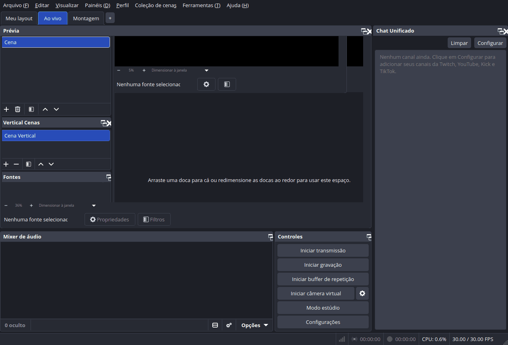
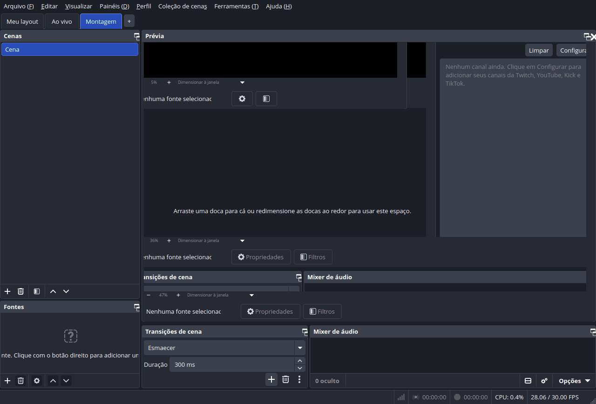
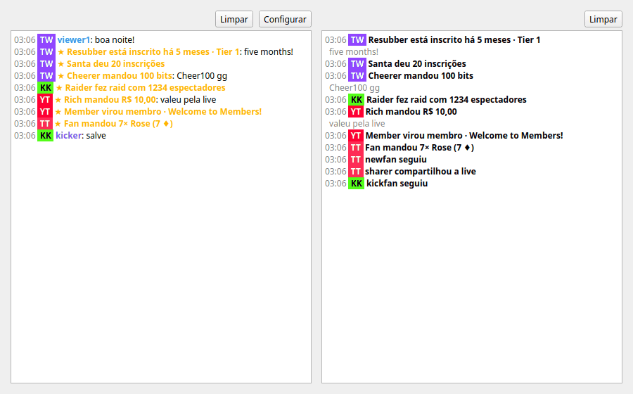
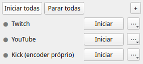
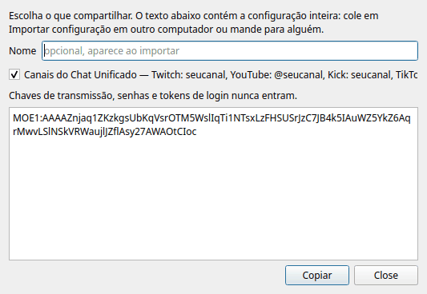

Abas de layout, chat unificado de Twitch, YouTube, Kick e TikTok com feed de atividade, multistream, canvas vertical e efeitos de áudio e vídeo. Para Windows, Linux e macOS, código aberto (GPL-2.0).
Layout tabs, a unified Twitch, YouTube, Kick and TikTok chat with an activity feed, multistream, a vertical canvas and audio/video effects. For Windows, Linux and macOS, open source (GPL-2.0).
BaixarDownload GitHubUma barra embaixo do menu troca o layout inteiro das docas: Ao vivo, Montagem e as suas. Salva sozinho, por perfil.
A bar under the menu swaps the whole dock layout: Live, Build and your own. Saves on its own, per profile.
Twitch, YouTube, Kick e TikTok numa doca. Com login na Twitch e no Kick: enviar mensagens, silenciar, banir e apagar.
Twitch, YouTube, Kick and TikTok in one dock. Log in to Twitch and Kick to send messages, time out, ban and delete.
Subs, presentes, raids, bits, follows, Super Chats e presentes do TikTok de todas as plataformas numa lista.
Subs, gifts, raids, bits, follows, Super Chats and TikTok gifts from every platform in one list.
Transmita para várias plataformas ao mesmo tempo, reaproveitando o codificador da transmissão principal ou com um próprio.
Stream to several platforms at once, reusing the main stream's encoder or with one of its own.
Um segundo canvas 9:16 com cenas, fontes, gravação e transmissão próprias (baseado no Aitum Vertical).
A second 9:16 canvas with its own scenes, sources, recording and streaming (based on Aitum Vertical).
Exporte abas, canais e saídas como um texto MOE1: e importe em outro PC. Chaves nunca vão junto.
Export tabs, channels and outputs as one MOE1: text and import it on another PC. Keys never go along.
Modificador de voz: pitch, rádio, distorção, robô, bitcrusher, tremolo e eco.
Voice changer: pitch, radio, distortion, robot, bitcrusher, tremolo and echo.
Faz uma fonte tremer com o grave de um áudio escolhido.
Shakes a source with the bass of a chosen audio input.





Precisa do OBS Studio 31.1 ou mais novo (abas e canvas vertical: OBS 32+).
Needs OBS Studio 31.1 or newer (tabs and vertical canvas: OBS 32+).
Baixe o instalador .exe na página de releases e execute. Não precisa de administrador. Reinicie o OBS.
Get the .exe installer from the releases page and run it. No admin needed. Restart OBS.
Baixe o .deb e instale:
Get the .deb and install it:
sudo apt install ./meketreve-obs-essentials-*-x86_64-linux-gnu.deb
Ou compile do código-fonte com ./build-aux/install-linux.sh (tem opção --flatpak).
Or build from source with ./build-aux/install-linux.sh (has a --flatpak option).
Baixe o .pkg e abra. Reinicie o OBS.
Get the .pkg and open it. Restart OBS.
Copie um texto e cole em Ferramentas → Meketreve: Importar configuração. Elas também aparecem na própria janela de importação.
Copy a text and paste it into Tools → Meketreve: Import configuration. They are also listed in the import window itself.
%%PRESETS%%